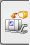

Open the Machine Tool Navigator .
Drag the navigator until you see the NC Axis column.
Right-click in the background of the navigator and choose Expand All.
Right-click in the background of the navigator and choose Columns, and click to clear the NC Axis check box.
The NC Axis column is immediately removed from the navigator display. To see a column quickly, use this mode of editing.
Right-click in the background of the navigator and choose Columns→Configure.
In the Machine Tool Navigator Properties dialog box, make sure that the Axis Type check box is selected.
In this mode of editing the columns, the added column does not immediately appear. Use the dialog box when you want to make multiple changes.
Use the up arrow to move the Axis Type line above the Initial Value line.
Click OK.
In the Machine Tool Navigator, notice that the Axis Type column is now displayed after the Axis Name column and before the Initial Value column.